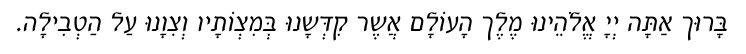

The work of the ‘Mikveh-lady’ is one of the most important and sensitive positions in Judaism, for the following reasons:
The night of the is an intimate one, best kept the secret of the husband and wife. The only person privy to this knowledge is the ‘Mikveh-lady.’
Furthermore, the wife must immerse under the supervision of the ‘Mikveh-lady.’ Immersion, especially while being observed, is not a daily activity and many women are understandably uncomfortable about it.
Additionally, the fact that other women are present often adds to the wife’s concern that no one should see her. All of this adds to the responsibilities she has already, preparing for the immersion.
In light of the above, the role of the ‘Mikveh-lady’ assumes an added dimension. More than once we have heard of women preferring one mikveh over another because of the ‘Mikveh-lady.’
Although each woman is different, the following points are offered as food for thought.
Sensitivity to the Woman Being Assisted
The ‘Mikveh-lady’ should be sensitive to the woman she is assisting. A bride preparing for her wedding, for example, requires extra sensitivity. Often she approaches this night with apprehension. In many instances her mother escorts her this first night to the mikveh. In such cases the mother will wait in the waiting room or outside. Other women in the vicinity may know the mother and be able to deduce that this evening her daughter is immersing. This may, in certain cases add unnecessary distress to the daughter. Therefore, a little planning is in order. Perhaps the arrangements may be made ahead of time for the bride to come later at night when things have quieted. Or, a place for the mother to wait can be organized.
The ‘Mikveh-lady’ should be made aware any time a woman is being brought to the mikveh for the first time or is new to the experience. This will allow her the opportunity to act appropriately with added support and consideration.
Women have their emotional needs. Some women prefer the ‘Mikveh-lady’ to act casually; not to make a fuss of her; not to raise her voice, calling attention. Some women like the ‘Mikveh-lady’ to be supportive and friendly.
In general, the atmosphere created in the mikveh should be congenial and conducive to calm, undisturbed preparations.
In each mikveh different arrangements are in place. Some women dislike mikvehs where the waiting room is communal. They dislike having to wait in sight of other women1Ramo 198:48... Not all mikvehs have sufficient space to alleviate this. Each ‘Mikveh-lady’ and communal Rabbi should take note of this point.
When the women have finished preparing themselves, they shouldn’t be kept waiting unnecessarily. They should not be rushed to finish, on the one hand, yet when they have concluded hafifah, effort should be made not to keep them waiting unnecessarily to immerse.
The water in the mikveh should be kept at as comfortable a temperature as possible. The water shouldn’t be too hot nor too cold. The ‘Mikveh-lady’ should try to keep the material necessary for the hafifah in stock and in place. This means that there should be enough soap, nail cutters, towels, combs, etc. in the bathrooms, so that the women don’t have to request them.
Those responsible should make sure that there is sufficient light in the bathrooms for the women to properly perform their hafifah.
Another point which can cause unnecessary stress to women is when those in charge of the mikveh announce that the mikveh is closed at a certain hour and everyone should hurry. Of course, the ‘Mikveh-lady’ works long hours, but arrangements should be made in the community to allow for situations wherein a woman comes late to the mikveh and requires time after the scheduled hours. If this necessitates the ‘Mikveh-lady’ to receive financial compensation, this should be weighed positively by those responsible.
Remember, this is a special, intimate, and sensitive night for many women. Family life revolving around immersion in the mikveh is the single most important ingredient in the strength of every family and the entire Jewish nation. Every community must do its best to ensure the ultimate comfort and convenience for this night, even if this involves added financial outlay. No money could be better spent.
A Word to the Wife
Experience shows that many women are tense about immersing in the mikveh. For some, this is based on fear of submerging. This may be accented by time pressure or fear of being observed. For others, this might be based on anxiety about performing the mitzvah properly.
Regardless of the reason, this is counterproductive. You should condition yourself mentally that no one is watching with a stopwatch and if submerging is distressing, you can go about it slowly. In fact, you should go into immersion happily. This night is the culmination of at least twelve days of separation from your husband and makes your intimate reunion possible. This is the single most important act in the Jewish family and should be done with joyous expectation.
In most communities there are fixed times when the mikveh is open and the ‘Mikveh-lady’ receives a fixed salary or stipend. In places where a “tip” is the norm this should be taken seriously, bearing in mind the important function the ‘Mikveh-lady’ fulfills, as well as the late hours involved.
Note: Only immersion in a kosher mikveh under constant supervision by an orthodox rabbinical board, an orthodox Rabbi or G-d fearing person specifically trained to supervise its upkeep, is able to remove the wife’s state. Baths, swimming pools, Jacuzzis and the like have no validity whatsoever in this context.
If her husband is in the city, it is a mitzvah to go to the mikveh as soon as she is allowed, in order not to delay fulfilling the commandment “Be fruitful and multiply” for even one night.
Shulchan Aruch 197:2
Background
In the verses, “... and he shall not eat of any sacred offering until he has immersed in a mikveh. At sunset he becomes ritually clean2Leviticus 22:6, 7,” purification is linked to sunset. Our sages3Sifrei. See Beis Yosef beginning of 198 and Beer Hagolah 198:1. connected the two (sunset and purification) by explaining that these verses indicate a condition of immersion. Just as there is a specific moment when the sun has “set,” so too must the immersion be completed at a specific moment. In other words, the entire body must be submerged simultaneously.
This concept explains the necessity for a complete hafifah, ensuring that there are no intervening substances4As detailed in the previous chapter., and the importance of being careful that the whole body, including the hair, is simultaneously submerged.
General
In fulfillment of, “Be fruitful and multiply5Genesis 1:28.,” if the husband is in the city, it is a mitzvah to go to the mikveh as soon as the situation is halachically permissible6Mehaber 197:2..
Even if they have already had children7“Although one has fulfilled the basic commandment, continued child-bearing is obliged, on a rabbinic level.” Even Haezer 1:8, Beit Shmuel 1:14. and even if she is presently nursing, pregnant8Poskim. or postmenopausal it is also correct to go as soon as possible9Shiurei Shevet HaLevy on Mehaber 197:2..
It is critically important to be sure that the mikveh is under constant qualified rabbinic supervision. This is especially necessary regarding mikvehs found in outlying villages and towns, where constant daily use and rabbinic supervision are not the rule.
It is important to keep the matter of going to the mikveh private10Ramo 198:48.. She should go to the mikveh in a way that doesn’t draw attention. Keeping this night a private issue holds in relation to other women as well11Bodei Hashulchan 198:371.. However, it needn’t be kept a secret from a woman asked to supervise her immersion or to escort her to the mikveh12Bodei Hashulchan 198 in Tziyonim 693..
If she is a guest at someone’s home where they are serving meat and her refraining from eating it may reveal that she is going to the mikveh that night, she should, nonetheless, not partake of the meat13Bodei Hashulchan in Beorim on Mehaber 198:24, “since there are other reasons through which to dismiss her refraining.”.
Even when other people may come to realize, for any reason, that this is her immersion night, she should not postpone it for the sake of secrecy14Darchei Teshuva 198:149..
Refraining from immersing as a way of angering the husband is forbidden15Darchei Teshuva 197:4..
Time
The wife goes to the mikveh on the night following the last day of the seven white days. The immersion must be after nightfall16Shach 197:6. The hour when Shabbos ends, shown on most Jewish calendars..
Even when the community prayed the evening services early, immersion may not precede nightfall17Mehaber 197:3. Pischei Teshuva 197:2.. This is regardless of the reason for her impurity—whether staining, hymenal bleeding following marriage18Bodei Hashulchan 197:42., bleeding following birth, etc19Ramo 194:1..
If she immersed before sunset on the seventh day, she should immerse again after nightfall20Shach 197:11., without saying a blessing21Bodei Hashulchan 197:66.. If immersion is very difficult or she immersed between sunset and nightfall22Ben hashmoshos. she needn’t immerse again after nightfall23Pischei Teshuva 197:13..
Under extreme circumstances24Even when the extreme circumstances are subjective to her alone, Tahara Kehalacha 21:11., when immersion during the night is not possible, it is permissible to postpone it until the eighth25Or subsequent day. day. Examples: the weather is extremely frosty, the water is much too cold, or there is imminent personal danger such as crime, or she resides in a country where there are enforced night curfews, or if she is too ill26Mehaber 197:4.. This refers to cases when these conditions apply on the eighth night as well, otherwise she must wait until then27Bodei Hashulchan 197:45.. However this postponement should be done only through consultation with an orthodox Rabbi expert in these laws.
However, in such a case, the woman should perform the preparations for the mikveh during the daytime28Therefore, this does not apply when the eighth day is Shabbos (Mehaber 199:7) or Yom Tov (Bodei Hashulchan 199:90), days when hafifah is forbidden. and not during the previous night, and try29If possible, Shiurei Shevet HaLevy on 197:4. to keep the fact that she immersed during the day a secret30See Pri Hasadeh part two, Chapter 45 where the case was brought of women who used to travel in order to be able to immerse in the mikveh during the eighth day and then came home after nightfall. However, the train schedule changed so that its return was during the afternoon and the halachic decision was to forbid returning home during the eighth day, except when this fell on erev Shabbos—since postponement would cause additional delay. Therefore, such a case was determined to be an urgent circumstance and they were permitted to return home on erev Shabbos, but not when the eighth day fell on another weekday, in which case they were not permitted to return home until the evening. See Darchei Teshuva 197:31. from her husband until nightfall and have marital relations only after nightfall31Ramo 197:5. Note that delaying marital relations until nightfall and keeping the immersion a secret from the husband mentioned in Ramo 197:5 apply to our situation as well, Darchei Teshuva 197:37, 38..
If the husband wants to travel during the twelve hours prior to the wife’s immersion, he must postpone such plans unless he’s travelling to fulfill a mitzvah or under extenuating circumstances32Ramo 184:10, Shulchan Aruch Admur Hazoken 184:37, 38..
When the husband is not in the city, the wife should not immerse in the mikveh33Shach 197:3, Bodei Hashulchan 197:10, Shiurei Shevet HaLevy on Mehaber 197:2. Note differing opinions in Darchei Teshuva 197:3.. However, if there is a chance he will return, she should immerse34Shiurei Shevet HaLevy on Mehaber 197:2..
She should not immerse35Pischei Teshuva 184:22. Tahara Kehalacha 21:3, 24:109. Bodei Hashulchan on Ramo 184:10 in Beorim. in the mikveh if her next menstruation36Affectionate contact, sleeping in the same bed, kissing and hugging are also forbidden on this night, as explained in Chapter Fourteen. is expected to appear on this night for example this evening is her Interval Cycle or Average Cycle37As explained at length in Chapter Fourteen. (see Chapter Fourteen).
If the husband is too ill to complete marital relations and the purpose of her immersion is in order to be able to assist him, an orthodox Rabbi expert in these laws should be consulted38Shiurei Shevet HaLevy on Mehaber 197:2 says that for purposes other than marital relations she is to immerse. Note differing opinions brought in Bodei Hashulchan on 197:1 in Beorim and 197:16..
On nittel nacht (the evening of December 24th) the wife immerses, however, it is best to delay relations until after midnight39Chatzos. Teshuvos Ubeorim Beshulchan Aruch sections 236. The inquiry answered by this letter refers to marital relations in general. There are pros and cons to deduce if this extends to the night of immersion as well. See there also in section 146 and Hayom Yom the seventeenth of Tevas..
Mourning. During the seven days of mourning of either the wife40Mehaber Yoreh Deah 381:5. or the husband41Bodei Hashulchan 197:16 and on Ramo 194:10 in Beorim. Tahara Kehalacha 21:3, 4. Note differing opinions in Pischei Teshuva 197:8, Darchei Tahara Chapter Seventeen and Shiurei Shevet HaLevy on Mehaber 197:2., the wife does not immerse in the mikveh.
Friday Night. An orthodox Rabbi expert in these laws should be consulted when her going to the mikveh on Friday night results from it being postponed from a previous night42Ramo 197:2..
Tisha BeAv and Yom Kippur. There is no immersion the evening of Tisha BeAv43Mehaber 554:8. or Yom Kippur. In such a case it is delayed to motzei Tisha BeAv or motzei Yom Kippur44Taz 381:2, Gefen Porioh 5:27, poskim..
Immersion
Depending on local custom, the woman walks from the bath to the mikveh covered with a cloak or sheet, with bath slippers on her feet.
It is necessary for a woman of at least twelve years of age45Who has at least partially entered her twelfth Hebrew birthday (regardless whether she was born during the beginning or end of that day), and has at least two pubic hairs, Even Haezer 155:16-18. Fulfillment of the former condition does not guarantee fulfillment of the latter, Shiurei Shevet HaLevy on Mehaber 198:40, Bodei Hashulchan 198:301. Developed breasts are an indication of the presence of pubic hair, Bodei Hashulchan 198:301. to supervise and insure that the fingernails are cut and cleaned as required, that there are no intervening substances46Shiurei Shevet HaLevy on 198:40. on the woman’s body or hair, that hair is unknotted and that the woman immerses her entire body, including her hair, simultaneously and completely 47Mehaber 198:40..
If there is no woman available to ascertain that every hair has submerged, or for some reason it is too dark to discern this48For example during an electricity failure on Shabbos., the wife should loosely bind her hair to her head to ensure it completely submerses. She must be sure it is loose enough to allow contact between the water and her hair and that it doesn’t cause her hair to tangle or knot. The following are permissible for this purpose, in descending order of preference:
- Loose fitting net of hair49Bodei Hashulchan 198:311., preferably human hair50Gefen Porioh 8:1. although animal hair is also acceptable51Bodei Hashulchan 198:28.—with no elastic band which may prevent entrance of water52Gefen Porioh 8:1.
- Loose fitting net of other material53Mehaber 198:2.
- Wool or linen cords or bands applied loosely54Mehaber 198:2.
- She may wet her hair and hand and ensure her hair submerged with her hand while loosely gripping it while submerged Failing to comply with one of the above stipulations invalidates the immersion and requires reimmersion55Pischei Teshuva 198:22..
Immediately prior to immersion, she checks her hair and body, both visually and with her hands to make sure there are no intervening materials on her body and no knots in her hair56Mehaber 199:1 brought in Darchei Tahara page 172. And Darchei Tahara beginning of Chapter Eighteen..
She should be careful that no dirt clings to her feet when she enters the mikveh57Kitzur Shulchan Aruch 161:18. Mehaber 198:45., for example from the mikveh house floor. If there is, however, it is assumed to have been washed off by the mikveh water58Mehaber 198:45., but if the mikveh water was cool or cold it is best to immerse again if this is easily possible, unless she shook or wiped her feet while in the water. Regarding light dirt, it is assumed that the mikveh water washed it off59Kitzur Shulchan Aruch 161:18..
She enters the mikveh until the water comes to about60Dinei Tikunei Hamikveh Vaasiyata, printed following Hilchos Niddah in Shulchan Aruch Admur Hazoken. nine inches above her navel61Mehaber 198:36 see Pischei Teshuva 21, “... half an arm’s length of six handbreadths.” According to 8 cm. to a handbreadth this equals approximately 24 cm. or 9.5 inches. (Quoted as 30 cm. or 12 inches in Kitzur Dinei Tahara 7:8.). A short woman may want to stand on the bottom step, which is designed and built especially wide62See Mivneh Mikvaos Veheksharom and Instructions for Construction of Mikvehs by Rabbi Y. Landau brought as an Appendix to Shulchan Aruch Admur Hazoken. for this purpose.
After entering the water, but before immersing, it is a good custom to splash some water on her eyes, under the armpits, and on the rest of her body63Sidrei Tahara 198:73 Kitzur Dinei Tahara. And under the breasts., unless she is still wet from the shower or bath64Taz 198:38, Kitzur Dinei Tahara 7:12..
It is important that the water should be a comfortable temperature so that the women will be relaxed. If it is too hot or cold65See Bodei Hashulchan 198:266. See Pischei Magidim 19:14., the ‘Mikveh-lady’ should be asked, tactfully, to cool or warm it.
The woman should not spend a lot of time immersing in cold water, so as to preclude her hair from becoming tangled66Shiurei Shevet HaLevy on Mehaber 199:1..
Intention—Kavanah
Ideally, immersion requires intention, kavanah, that she is doing so in order to leave her niddah state and not, for example, to cool off on a hot day67Ramo 198:48.. After the fact, however, she can rely on, for example, having immersed according to halacha or that she recited a blessing etc., as evidence of sufficient intention68Tahara Kehalacha 22:19. According to the Mehaber 198:48 “... without intention, for example, she fell into the water or entered in order to cool off.” Note: “One who attends synagogue in order to fulfill his obligation of hearing the shofar, although at the time had no specific intentions, nonetheless has fulfilled the mitzvah completely. He is ‘drawn’ after his original intention of attending the synagogue,” Shulchan Aruch Admur Hazoken Orach Chaim 589:9..
If her intentions in immersing were only to allow contact, not marital relations, because her husband is ill, nonetheless this intention suffices for marital relations as well69Pischei Teshuva 198:26, Shiurei Shevet HaLevy..
Posture
A woman immerses her whole body once, paying special attention to lowering her head deep enough as to ensure her hair is totally submerged70According to some local customs, the “Mikveh-lady” pronounces each immersion “kosher.” Note Taz 198:38..
Her arms should be somewhat extended from her body as if she is walking (so that water can enter under the armpits). She bends forward slightly. The hands should be naturally open. The legs likewise naturally spread and naturally straight at the knees71Mehaber 198:35..
This posture is designed to ensure that the mikveh water can reach her body’s entire surface area (armpits, between the fingers, under the breasts, between fat folds, between her legs, behind the knees, under the chin)72Shach 198:48.. She need not lift her feet off the floor73Mehaber 198:30..
Blessing
She then crosses her arms under her heart74The prohibition of “ones’s heart should not see one’s genitalia,” which applies to women, includes not saying a blessing even when the genitalia are covered. Therefore the arms are crossed below the heart, Bodei Hashulchan 200:4. Shulchan Aruch Admur Hazoken 74:3-5., (according to some customs, a hair covering is placed over her head75Brought by some poskim, not mentioned in Kitzur Dinei Tahara.) and she recites76The din (Mehaber 200:1) of splashing around the water is only regarding muddy or murky water, but not in our mikvehs, Bodei Hashulchan 200:9. the blessing77Immersion resulting from seeing blood during the forty days following the birth of a male or eighty days following the birth of female requires a blessing, Pischei Teshuva 194:2. If she became niddah as a result of feeling a hargasha, checked, and did not find any blood, (as explained in Chapter Two) an orthodox Rabbi expert in these laws should be consulted whether a blessing should be said. See opinions brought in Bodei Hashulchan 200:5.:

(Boruch Atoh Adonoi Eloheinu melech haolom, asher kedeshonu bemitzvosov vetzivonu al hatviloh.)
Blessed are You, L-rd, our G-d, King of the universe, Who has sanctified us with His commandments and commanded us concerning immersion.
During the blessing she does not gaze into the water78Kitzur Dinei Tahara 7:16..
The blessing is recited regardless of the reason for her immersion and niddah state, i.e., whether due to menstruation, staining79Aruch Hashulchan, Shiurei Shevet HaLevy on Mehaber 200:1., due to a strict rabbinical ruling, or hymenal bleeding80Pischei Teshuva 194:2, Shiurei Shevet HaLevy on 200:1..
She should not interrupt with speech between the blessing and the immersion81Mishnah Beruroh 206:11-12.. If the blessing was said mistakenly before taking off the robe, it should not be repeated82Bodei Hashulchan 200:1.. A bride does not say the blessing ‘shehechiyonu’ when immersing for the first time83Darchei Teshuva 200:2.. A woman who returns to the mikveh as a result of finding a fingernail uncut, a new blessing is not said84Aruch Hashulchan 48 see Bodei Hashulchan 200:5..
Then she immerses again85Some opinions say the blessing is recited before immersing as in all other mitzvahs, Mehaber 200:1. Some say that the blessing over immersing is likened to that of a convert who, prior to immersing, can’t say the blessing “who has commanded us.” This custom satisfies both opinions.. This second immersion is sufficient and she need not add more. According to local custom or family or community tradition additional immersions may be performed86Three has been suggested, Gefen Porioh Chapter Eight endnote 19; nine has also been suggested, Tahara Kehalacha 22:23.. However, a woman should be careful not to adopt a custom which could become a de facto vow, if she doesn’t intend to always keep it.
The second immersion87Or another, if she repeats the immersion. is done as follows: her head is lowered so much that her body is close to a horizontal position88Note the letter from the Rebbe printed in Sharei Halacha Veminhag page 104. in the water89Bodei Hashulchan 200:13 in the name of the Chalet, brought in Darchei Tahara 200:4. Also see there a case brought before the Shaloh of a woman who had a doubt as to whether her hair went completely under the water during her second immersion and the Shaloh didn’t require her to go back. like a fish suspended in the water90“Her body stretched out...,” Instructions for Construction of Mikveh—Appendix to Shulchan Aruch Admur Hazoken..
She should not hold or touch the walls. If she has difficulty, she can lightly touch the wall, however water should be able to come between the hand and the wall.
The immersion should be performed slowly and intentionally, not in a hurried manner. However if she did hurry, it nonetheless does not invalidate the immersion—so long as she completely immersed her entire body (and hair) as required91Mehaber 198:34..
If she is in doubt whether all parts of her body were in simultaneous contact with the water, due to her posture, she should immerse again92Mehaber 198:35..
It is customary for the ‘Mikveh-lady’ to declare the immersion valid by saying “kosher” or some other phrase with this same meaning93Taharas Yisroel 199:151.. This causes the same declaration to be said in heaven and the meriting of holy, righteous children. If the ‘Mikveh-lady’ does not utter this pronouncement for whatever reason, the immersion is not invalidated94Shiurei Shevet HaLevy on 198:40..
Squinting Eyes/pursing Lips
The eyes should be naturally closed, not squinted95Allowing contact with the water.. If she squinted her eyes, she should immerse again96Mehaber 198:39.. If immersing again is not possible, her immersion is nonetheless valid97Shach 198:51..
The mouth should be naturally closed, not pursed98Mehaber 198:38.. If she tightly pursed her lips, her immersion is invalid and she must immerse again99Mehaber 198:27, 38..
Ideally, she should keep her mouth and teeth naturally closed. However, if she kept her teeth closed extra tightly, her immersion is still valid100Pischei Teshuva 198:17..
If she immersed while holding her hair in her lips, her immersion is invalid101Mehaber 198:27.. These stringencies of pursing the lips, squinting the eyes, or holding the hair in her lips only apply when she is sure she did so in all of her immersions.
Not excessively squinting the eyes or pursing the lips apply to all women and should be emphasized to those particularly apprehensive of immersing, such as brides102Shiurei Shevet HaLevy on Mehaber 198:38..
Tightly Held Fists
If she held a tight fist from before her hand entered the water until after she left the water, so that the mikveh water never came into contact with the closed part—her immersion is invalid103Mehaber 198:27..
If she made a fist after her hand entered the water104Mehaber 198:28. Or it was still wet from the shower, Shach 198:28., even if she held it until she finished immersing, her immersion is valid, after the fact105The water in her hand “connects” to the mikveh’s water, Mehaber 198:28..
One shouldn’t search for stringencies from which to invalidate the immersion; because there simply won’t be an end to it.
Rather, after performing the hafifah, combing, washing her whole body, exercising caution not to touch any substances which could intervene and immersing with extended arms and body, she shouldn’t allow various doubts to enter her thoughts. For example: whether she squinted her eyes or pursed her lips too much or similar thoughts.
For who is qualified to distinguish between something like squinting too tightly or not? (Ramban, end of Hilchos Niddah)
After Immersion
Meeting a Woman First. When leaving the water, the ‘Mikveh-lady’ approaches106Sidrei Tahara 198:91. and touches her107Sidrei Tahara 198:91. In fulfillment of “meeting a kosher person first,” Ramo 198:48..
If she saw something impure first, for example a dog, cat108Bodei Hashulchan 198:696 in Tziyonim., donkey109Seeing a horse does not adversely affect her immersion, Sidrei Tahara 198:91., pig, or non-Jew, before seeing110Sidrei Tahara 198:91. the ‘Mikveh- lady’ (or one of the other women in the mikveh even if she was niddah111Bodei Hashulchan 198:377.), ideally she should immerse again112Ramo 198:48. “There were righteous women who would return to immerse again if they saw something impure even after leaving the mikveh building.” Excerpt of a letter from the Rebbe printed in Sharei Halacha Veminhag page 105., if possible. This is done without reciting a blessing113Poskim..
If, however, she already had relations114See Shach 198:25. or her husband is not in the city and marital relations will be another night115Sidrei Tahara 198:91., she need not immerse again.
If the ‘Mikveh-lady’ has any doubts whatsoever that the wife’s entire body, including all her hair (even one strand) was immersed, she must immerse again.
If there is no Jewish woman for her to see immediately following immersion, she can suffice by conjuring up thoughts of her husband or a tzaddik116Tahara Kehalacha 22:28..
Washing. She should not rinse off the mikveh water, either in a shower or bath, before going home117Ramo 201:75. See Tahara Kehalacha 22:29, which brings opinions permitting parts of the body to be rinsed off by a shower.. If there is a definite need, e.g., the mikveh water was not clean118Very uncommon in most modern facilities under constant supervision. or for health reasons119Pischei Magidim 18:30., the wife is permitted to rinse off through a shower after returning120Gefen Porioh 8:12. home121The prohibition of washing after immersion is based on the possible mistake that the washing (not the immersion) causes purity. This does not apply when doing so at home. See Tahara Kehalacha Chapter 22 footnote 76. Note “After immersion in a kosher mikveh, she is allowed to return to the bathhouse in order to warm up. However she is not permitted to return to wash, and this is the custom,” Ramo 201:75. Note Darchei Moshe end of 201.. In such a case the head and body should be rinsed separately and not simultaneously122Tahara Kehalacha 22:29. Note that Shiurei Shevet HaLevy on 198:48 allows showering after returning home. Note Darchei Teshuva 201:332 and Darchei Moshe end of 201..
Verbal Declaration. Before any physical contact may be resumed123Ramo 192:2, Bodei Hashulchan 185:3, Darchei Teshuva 184:4., she must verbally124This declaration concludes the process and thereafter she is permitted. tell her husband “I’ve immersed125Mehaber 185:1.” or “I’m pure126Bodei Hashulchan 185:5.” or similar words127Darchei Teshuva 185:6.. This is so, regardless of whether her niddah state was due to menstruation or staining128Darchei Teshuva 185:1..
His understanding through her actions alone is insufficient129Chavas Da’as 185:1. Darchei Teshuva 184:4.. Even her lying next to him does not suffice without her explicitly stating that she has immersed130Chavas Da’as and Pischei Teshuva 185:1. Note, however, “Verbal expression is not necessary, rather, mutually agreed upon actions, such as passing an object etc., suffice. So too, her nodding at his inquiry whether she immersed,” Bodei Hashulchan 185:7. Shiurei Shevet HaLevy on Mehaber 185:1 is likewise lenient..
Things to Be Cautious of
Mud at the bottom of the mikveh131Mehaber 198:33, 42 and 45., although almost non-existent nowadays (most mikvehs being immaculate), represents a halachic obstacle. In such a case, an orthodox Rabbi expert in these laws should be consulted.
In the event of no woman supervisor being available, an orthodox Rabbi expert in these areas should be consulted.
It is forbidden to stand on any vessel, chair, bench or other object, whether it receives spiritual impurity or not, while immersing132Mehaber 198:31..
After the fact, if she stood on an object which does not receive spiritual impurity, her immersion is valid133Mehaber 198:31., as long as this didn’t cause her to be unbalanced and therefore her body posture awkward, so that the mikveh water didn’t reach parts of her body.
Her immersion is invalid if she stood on an object134Or garment, Bodei Hashulchan 198:229. which receives spiritual impurity135Mehaber 198:31., whether made of wood, bone, metal, skin, or otherwise136Bodei Hashulchan 198:229..
In the event of anything, including mats, on the mikveh floor, an orthodox Rabbi expert in these laws must be consulted. There are many considerations involved in this matter137See Bodei Hashulchan, Shach and Taz on Mehaber 198:31, 32..
If the wife requires the support of a friend or the supervisor for fear of immersion, physical illness or disability, etc., the following procedure should be followed: the woman supporting her places her own hand into the water and there she makes contact with the wife’s body. She should also be careful to keep only a light grasp on her 138Mehaber 198:28..
If the mikveh’s waters don’t reach approximately nine inches above her navel, the wife is to lower her body in a more horizontal position as previously described, in order to facilitate complete immersion139Mehaber 198:37..
This is the case even if the low water level requires a completely horizontal position140“Her face and body are adjacent to the floor of the mikveh...,” Mehaber 198:37, Bodei Hashulchan 198:287, Mehaber and Ramo 201:66.. In such a case, before immersing, she should splash mikveh water on all parts of her body, especially under the armpits, under the breasts, and between layers of fat141Tahara Kehalacha 22:17..
If another mikveh with the proper water level is available, then it should be used142Ramo 201:66, Bodei Hashulchan 198:285.. If she has a skin disease which disallows contact with water for medical reasons, an orthodox Rabbi expert in these laws must be contacted143Shulchan Aruch Admur Hazoken 187:57, poskim..